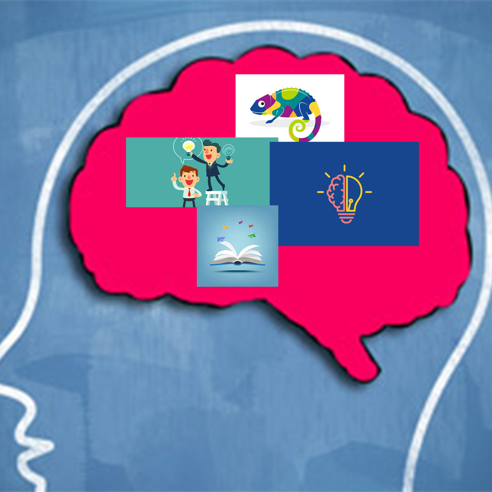
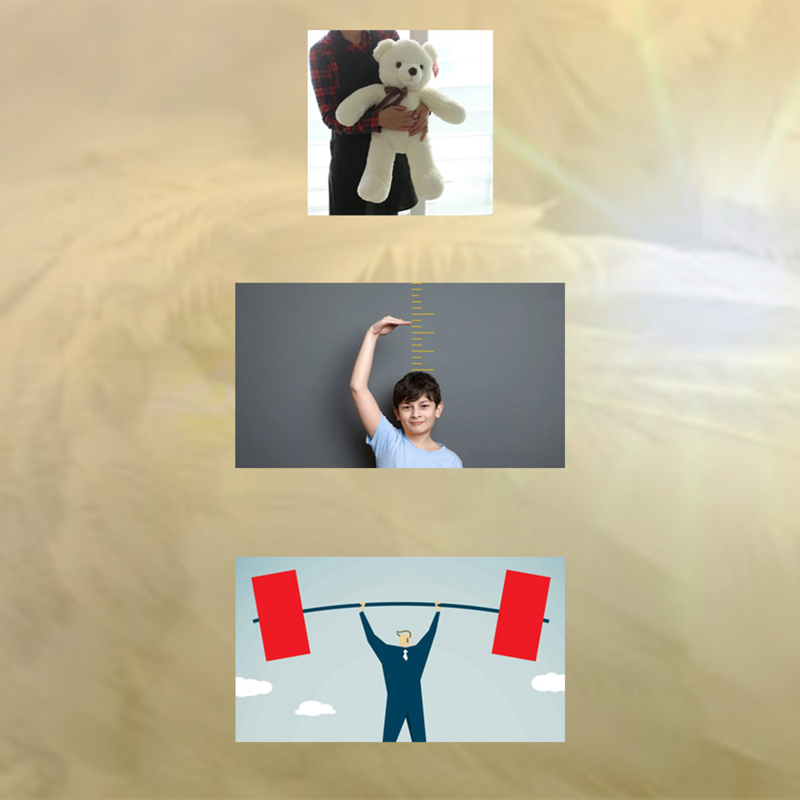
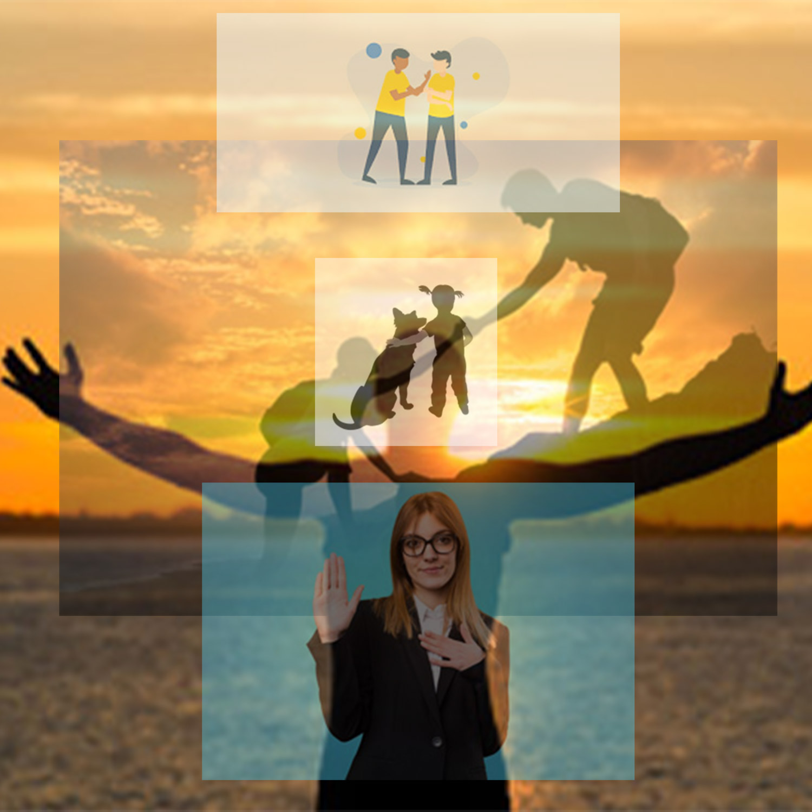

When I first approached this project, I knew that I would need to look deep into myself. My Mind and Body collages I knew would be easy, since those were the two aspects that I had been dealing and changing with my whole life. They were aspects that I had not trouble acknowledging. I wanted to show a sort of separation in each aspect in those two collages seeing as there are easily identifiable traits that could be seen on the surface level of myself. But when it came to the sou/spirit of the collages I knew that aspect would not be so straightforward. My “soul” is a topic that I had but not recently began to think of. Sure I know it had defining characteristics to but ones that could be not so easily seen as others, and so for that collages I wanted to create a sort of traffic jam, concepts that can be see separately but they begin to merge together after a while with only a few taking the limelight when looking closely. All of these concepts were easy to locate picture wise but hard to illustrate collage wise without slicing and dicing. But with the little and brand new knowledge that photoshop provided I was able to at least illustrate my surface level intentions.
This project has been very insightful for how I view myself and how I express myself to others. The images helped to ground how EXACTLY I view myself. It was very introspective and helped to further ground how I will continue to grow and find myself.
  